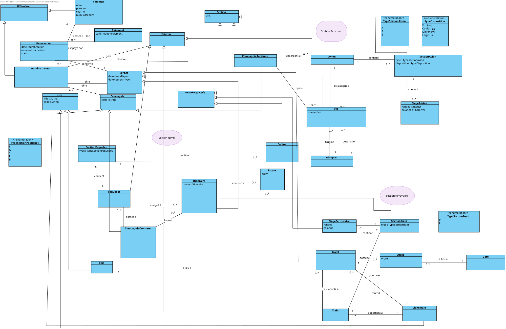
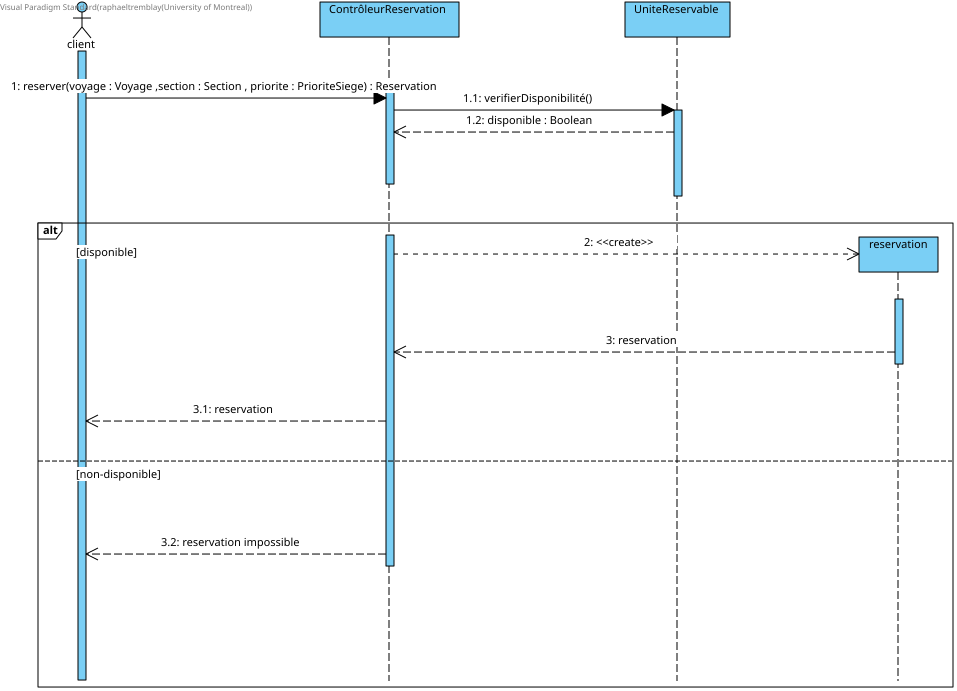
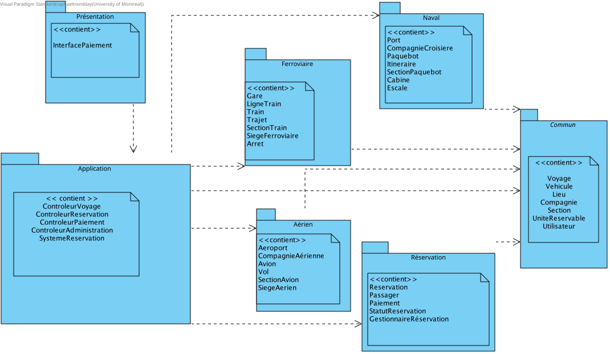

Ce rapport présente les différentes parties du devoir maison 2.
Le travail comprend la modélisation et l'analyse d'un réseau de Pétri,
la réalisation d'un Statechart pour un four à micro-ondes, ainsi que
la révision et l'analyse de la qualité du design logiciel développé
dans le cadre du devoir maison 1.
2. Distribution des tâches
Les tâches ont été réparties entre les membres de l'équipe selon les
responsabilités principales de chacun. Pour la révision du devoir 1,
chaque membre révise principalement les éléments auxquels il avait
contribué lors du premier devoir.
Tâche
Angélique Defert
Hugo Bouchard
Raphaël Tremblay
Réseau de Pétri
100%
0%
0%
Statechart
0%
100%
0%
Révision du diagramme de classes conceptuel
0%
0%
100%
Révision des DSS
0%
100%
0%
Révision du diagramme de classes logiciel
100%
0%
0%
Révision des diagrammes de séquence
33% — Paiement
33% — Vérification
33% — Réservation
Révision du diagramme de paquets
0%
0%
100%
Révision des contraintes OCL
0%
100%
0%
Identification des modules réutilisables
0%
0%
100%
Analyse de la qualité du design
0%
0%
100%
3. Hypothèses
[Hypothèse 1]
[Hypothèse 2]
[Hypothèse 3]
4. Réseau de Pétri — Tunnel
4.1 Fichiers concernés
[reseau-petri.ext]
images/reseau-petri.png
4.2 Modélisation
[Décrire brièvement le réseau de Pétri réalisé.]
Figure 1 — Réseau de Pétri modélisant le tunnel.
4.3 Loi de conservation
[Démontrer que seule une voiture peut être présente dans le tunnel.]
4.4 Graphe de couverture
Figure 2 — Graphe de couverture du réseau de Pétri.
[Justifier l'équité du système et l'absence de famine.]
5. Statechart — Four à micro-ondes
5.1 Fichiers concernés
Microwave/model/microwave.sct
images/microwave-statechart.png
5.2 Modélisation
[Décrire brièvement les états et transitions principales.]
Figure 3 — Statechart du four à micro-ondes.
5.3 Fonctionnement
[Décrire la sélection de puissance, le timer, la cuisson,
l'ouverture de la porte, l'arrêt et la fin de cuisson.]
5.4 Génération du code
[Indiquer que le code a été généré à partir du Statechart
et testé dans l'application fournie.]
6. Révision du design logiciel du devoir 1
6.1 Révision du diagramme de classes
6.1.1 Fichiers concernés
DiagrammeDeClassesConceptuelRevise.vpp
DiagrammeDeClassesConceptuelRevise.svg

Figure 4 — Diagramme de classes logiciel révisé.
6.1.2 Modifications apportées
Le diagramme de classes conceptuel a été révisé afin de corriger les problèmes relevés dans le devoir 1.
Les classes générales `Lieu`, `Vehicule`, `Voyage`, `Compagnie`, `Section`, `UniteReservable` et `Utilisateur` ont été définies
comme abstraites lorsque seules leurs spécialisations représentent des concepts concrets du domaine.
Les attributs communs ont également été déplacés vers les classes générales appropriées afin d'éviter la duplication.
Par exemple, `code` et `ville` sont définis dans `Lieu`, tandis que les différents types de lieux héritent de ces attributs.
De même, l'attribut `prix` est maintenant défini dans `Section` et hérité par les différents types de sections.
Les attributs génériques nommés `id` ont été remplacés par des termes plus représentatifs du domaine, comme `numeroVol`,
`numeroItineraire` et `numeroReservation`.
La classe `Ville`, devenue inutile, a été supprimée. La hiérarchie des compagnies a également été ajustée afin que
`LigneTrain` soit considérée comme une spécialisation de `Compagnie`. Une distinction entre `Administrateur` et `Passager`
a été ajoutée à partir de la classe abstraite `Utilisateur`, afin de représenter les différents rôles présents dans le système.
Finalement, certaines associations et cardinalités ont été précisées, notamment la relation entre `Avion` et `SectionAvion`,
ainsi que les relations du volet ferroviaire. Les visibilités des attributs ont aussi été retirées du modèle conceptuel
puisqu'elles relèvent davantage du design logiciel que de la modélisation du domaine.
6.1.3 Justification
Ces modifications améliorent le modèle en réduisant la duplication et en regroupant les caractéristiques
communes dans des abstractions appropriées. L'utilisation de classes abstraites permet de représenter clairement les
concepts généraux du domaine tout en laissant leurs spécialisations décrire les éléments concrets du système.
Le déplacement des attributs communs vers les classes parentes améliore également la cohérence du modèle.
Par exemple, les différents types de lieux partagent maintenant les mêmes caractéristiques de base sans devoir les redéfinir
individuellement. La même logique s'applique aux sections et aux compagnies.
Le remplacement des attributs génériques comme `id` par des noms correspondant au vocabulaire du domaine rend le diagramme
plus expressif et moins dépendant de détails d'implémentation. La suppression de la classe `Ville` simplifie également
le modèle en éliminant une classe qui n'apportait pas de responsabilité conceptuelle suffisante.
Enfin, l'ajout des rôles `Administrateur` et `Passager`, ainsi que la correction des associations et cardinalités,
permet au diagramme de mieux représenter les besoins réels du système et les responsabilités des différents acteurs.
Le modèle devient ainsi plus clair, plus cohérent et plus facilement réutilisable pour produire le design logiciel.
6.2 Révision des diagrammes de séquence
6.2.1 Diagramme de séquence — Paiement
Fichiers concernés
PaiementRevise.vpp
PaiementRevise.svg
Figure 5 — Diagramme de séquence révisé pour le paiement.
Modifications apportées
[Présenter les modifications apportées au diagramme de séquence
de paiement.]
Justification
[Justifier les modifications apportées au diagramme de séquence
de paiement.]
6.2.2 Diagramme de séquence — Vérification
Fichiers concernés
VerificationRevise.vpp
VerificationRevise.svg
Figure 6 — Diagramme de séquence révisé pour la vérification
des voyages.
Modifications apportées
[Présenter les modifications apportées au diagramme de séquence
de vérification.]
Justification
[Justifier les modifications apportées au diagramme de séquence
de vérification.]
6.2.3 Diagramme de séquence — Réservation
Fichiers concernés
ReservationRevise.vpp
ReservationRevise.svg

Figure 7 — Diagramme de séquence révisé pour la réservation.
Modifications apportées
Le diagramme de séquence de réservation a été révisé afin de corriger les incohérences relevées dans le devoir 1.
L’opération verifierDisponibilité() est maintenant appelée sur UniteReservable, puisqu’il s’agit de la classe responsable
de la disponibilité d’une unité pouvant être réservée, plutôt que sur Section.
Les messages représentant des résultats retournés ont également été corrigés afin d’utiliser des messages de retour appropriés.
Ainsi, disponible : Boolean, le retour de la réservation créée ainsi que le message indiquant qu’une réservation est impossible sont représentés
comme des retours.
Justification
Ces modifications améliorent la cohérence entre le diagramme de séquence et le diagramme de classes logiciel.
La vérification de la disponibilité est maintenant attribuée à UniteReservable, qui possède l’information nécessaire,
ce qui respecte le principe GRASP d’Expert en information.
Les messages de retour ont aussi été corrigés afin de respecter la notation UML.
Finalement, le fragment alt représente clairement les cas où la réservation est possible ou impossible.
6.3 Révision du diagramme de paquets
Fichiers concernés
PackageDiagramRevise.vpp
PackageDiagramRevise.svg

Figure 6 — Diagramme de paquets révisé.
Le diagramme de paquets a été révisé afin de préciser le contenu de chaque paquet et de mieux représenter leurs responsabilités.
Les classes principales sont maintenant associées explicitement aux paquets `Application`, `Commun`, `Aerien`, `Naval`, `Ferroviaire` et `Reservation`.
Cette modification améliore la lisibilité du design, facilite l’analyse du couplage et de la cohésion, et montre plus clairement que les paquets spécialisés réutilisent
les abstractions communes regroupées dans `Commun`.
6.4 Révision des contraintes OCL
[Présenter les contraintes OCL modifiées ou ajoutées.]
6.5 Modules à usage général et réutilisables
Certains modules du système ont été conçus de manière suffisamment
générale pour pouvoir être réutilisés dans d'autres applications.
Module
Responsabilité
Raison de sa réutilisabilité
Commun
Regroupe les abstractions communes aux différents modes
de transport.
[Justification]
Réservation
Gestion du processus de réservation.
[Justification]
[Autre module]
[Responsabilité]
[Justification]
7. Analyse de la qualité du design
Cette analyse vise à démontrer la qualité du design révisé
en examinant le couplage et la cohésion des classes et des
paquets, le fardeau des classes, la stabilité et le niveau
d'abstraction des paquets ainsi que les principes de
conception appliqués.
7.1 Couplage
[Analyser le couplage des classes et des paquets.
Identifier explicitement les types de couplage concernés.]
À discuter :
couplage par données, paquet, contrôle, commun ou contenu,
ainsi que le CBO lorsque pertinent.
7.2 Cohésion
[Analyser la cohésion des principales classes et modules.
Identifier explicitement le type de cohésion.]
À discuter :
cohésion fonctionnelle, informationnelle,
communicationnelle, procédurale, etc.
7.3 Fardeau et domaine des classes
[Analyser le fardeau des principales classes en relation
avec leur domaine : fondation, architecture, métier ou
application.]
7.4 Stabilité et abstraction des paquets — Graphe IA
Pour chaque paquet, l'instabilité est calculée à l'aide de :
I = Ce / (Ca + Ce)
où :
Ca représente le nombre de dépendances
entrantes;
Ce représente le nombre de dépendances
sortantes.
Le niveau d'abstraction est calculé avec :
A = Na / Nc
où :
Na représente le nombre de classes
abstraites;
Nc représente le nombre total de classes
du paquet.
La distance par rapport à la Main Sequence est calculée avec :
D = |A + I - 1|
Paquet
Ca
Ce
I
Na
Nc
A
D
Commun
-
-
-
-
-
-
-
Aérien
-
-
-
-
-
-
-
Naval
-
-
-
-
-
-
-
Ferroviaire
-
-
-
-
-
-
-
Réservation
-
-
-
-
-
-
-
Application
-
-
-
-
-
-
-
Figure 7 — Graphe Instabilité-Abstraction des paquets.
7.4.1 Interprétation du graphe
[Justifier la position des différents paquets par rapport
à la Main Sequence.]
7.5 Principes de conception appliqués
Principe
Application dans le design
SRP
[Expliquer]
OCP
[Expliquer]
LSP
[Expliquer]
ISP
[Expliquer ou indiquer pourquoi ce principe
est peu applicable dans le design.]
DIP
[Expliquer]
CRP
[Expliquer]
ADP
[Expliquer l'absence de cycles entre les paquets.]
SDP
[Expliquer les dépendances vers des paquets plus stables.]
SAP
[Expliquer la relation entre stabilité et abstraction.]
8. Conclusion
[Résumer les principaux résultats du devoir, les améliorations
apportées au design et les conclusions de l'analyse de qualité.]